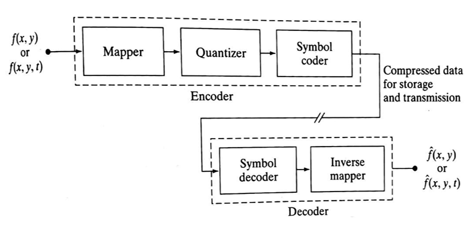
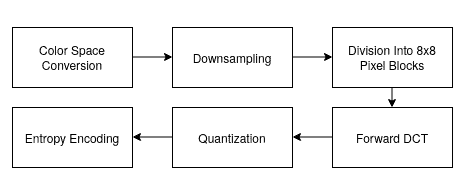

Introduction
Image compression is defined as the process of reducing the amount of data needed to
represent a digital image. This is done by removing the redundant data.
The objective of image compression is to decrease the number of bits required to store and transmit without any measurable loss of information.
Two types of digital image compression are:
- Lossless (or) Error – Free Compression
- Lossy Compression
Need for Data Compression:
- If data can be effectively compressed wherever possible, significant improvements in data throughput can be achieved.
- Compression can reduce the file sizes up to 60-70% and hence many files can be combined into one compressed document which makes the sending easier.
- It is needed because it helps to reduce the consumption of excessive resources such as hard disc space and transmission bandwidth.
- Compression can fit more data in small memory and thus it reduces the memory space required as well as the cost of managing data.
Image Compression Model
The following figure shows an image compression system is composed of two distinct functional components: an encoder and decoder. The encoder performs compression and decoder performs the complementary operation of decompression. Both operations can be performed in software. Input image is fed into the encoder, which creates a compressed representation of the input. When the compressed representation is presented to its complementary decoder, a reconstructed image is generated.

Compression Methods
- Color Space Conversion: The image is converted from RGB to YCbCr, separating brightness (Y) from color (Cb, Cr). This allows more compression on color data, which the human eye is less sensitive to.
- Down sampling: Chrominance channels (Cb and Cr) are down-sampled (typically 4:2:0), reducing their resolution and file size with minimal visual impact.
- Block Division: The image is divided into 8×8 pixel blocks, and each block is processed independently.
- Forward DCT (Discrete Cosine Transform): Each 8×8 block is transformed into frequency components, represented as weight values for base patterns. No data is lost at this step.
- Quantization: Frequency data is divided by a quantization table and rounded, removing high-frequency details (mostly imperceptible), which reduces file size.
- Entropy Encoding: The quantized values are serialized in a zig-zag order, then compressed using Run-Length Encoding (RLE) followed by Huffman Coding — both lossless methods.
JPEG
JPEG stands for Joint Photographic Experts Group and is a lossy compression algorithm that results in significantly smaller file sizes with little to no perceptible impact on picture quality and resolution. A JPEG-compressed image can be ten times smaller than the original one. JPEG works by removing information that is not easily visible to the human eye while keeping the information that the human eye is good at perceiving.